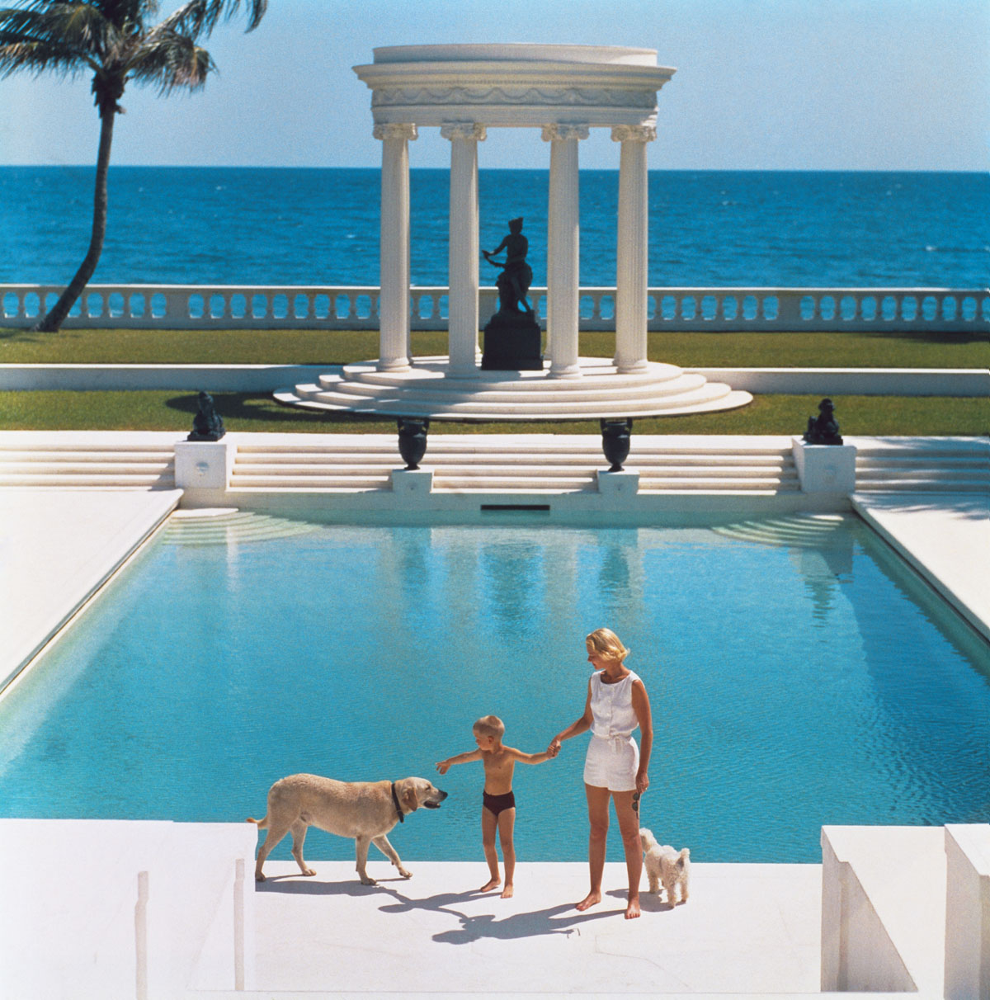
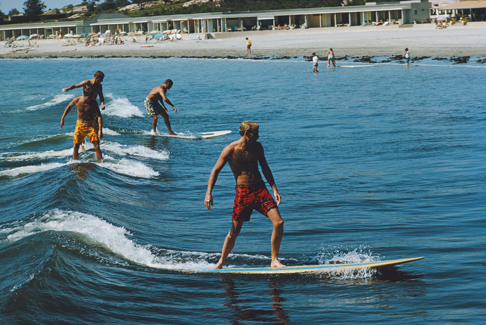
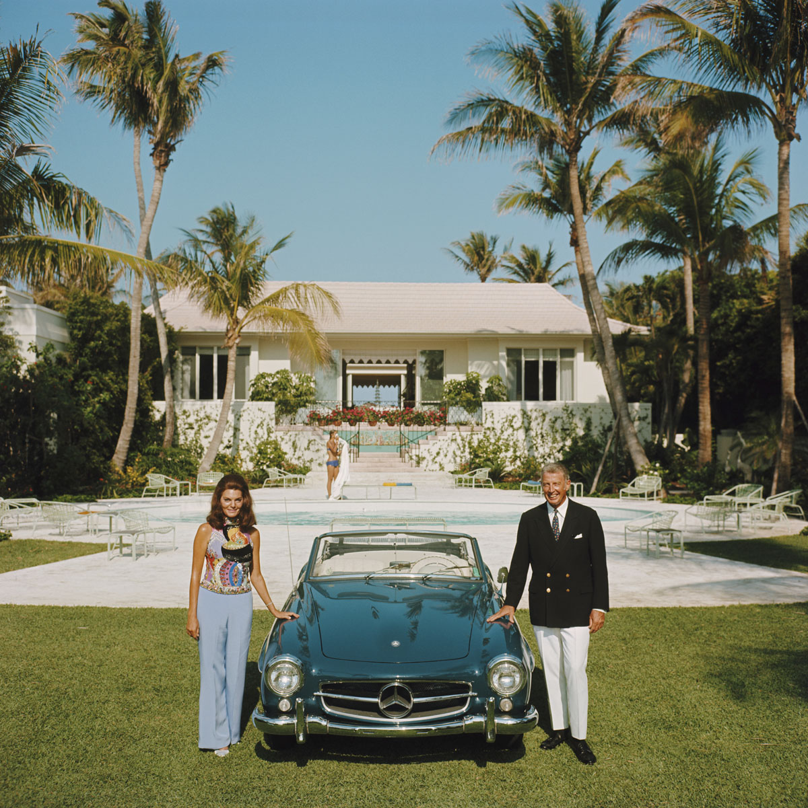
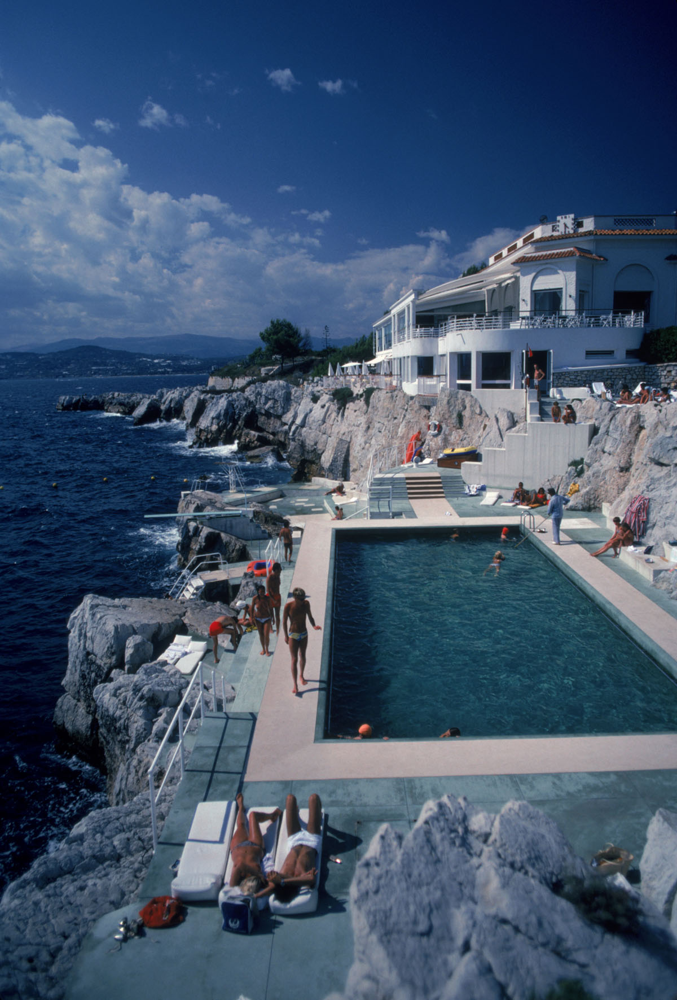
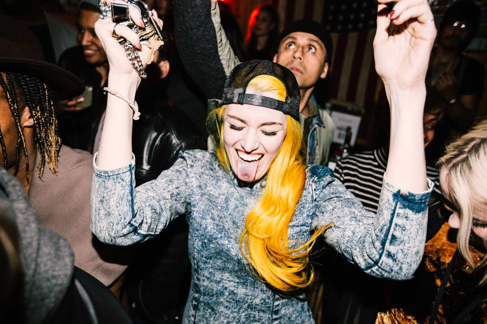
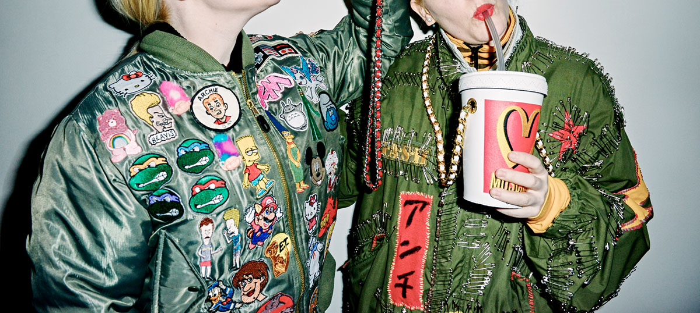

New York’s acclaimed fashion event for the disruptive, edgy and eclectic at heart is making its way to Sydney. From November 11-13, 2016,
Sydney is turning Carriageworks into a runway for fashion and wheels presented by Mercedes-Benz with support from WME | IMG.
Drawing inspiration from Sydney’s unique creative culture MADE Sydney will mix the worlds of fashion, sports, skateboarding and street culture together in this inaugural event.
“Sydney is a place where fashion and sports intertwine,” says Barnett Zitron, VP and Managing Director, MADE. “At MADE Sydney presented by Mercedes-Benz,
we’re building a physical manifestation of the fashion industry’s love affair with skate and street culture.”
Featuring a first-ever fashion show from the Kim Kardashian and Rihanna adored Paris-Based luxury label, Faith Connexion,
a replica of the world-famous (but now demolished) skateboarding spot out of San Franciscoa, the Hubba Hideout, and the world premiere of The High Life: Slim Aarons,
a documentary about the life and work of photographer Slim Aarons whose style can be described as “photographing attractive people doing attractive things in attractive places.”
The replica of Hubba Hideout will serve as the runway for Faith Connexion before it opens up to the public for skate hours and
Sydney’s first-ever Style + Skate amateur competition on November 13 judged by pro-skater, Corbin Harris.
The event will also feature a retail component called The Stores, making the collections and products of numerous brands readily available for consumers.
As the platform expands beyond New York City to Los Angeles and Berlin, MADE Sydney is the next step in immortalizing the ideals of Jenne Lombardo,
Mazdack Rassi and Keith Baptista to support and showcase the most exciting emerging talent of the future.

American writer C.Z. Guest (Mrs F.C. Winston Guest, 1920 – 2003) and her son Alexander Michael Douglas Dudley Guest in front of their Grecian temple pool on the ocean-front estate,
Villa Artemis, Palm Beach. Original Publication: A Wonderful Time – Slim Aarons (Photo by Slim Aarons/Getty Images)

Freddie and Howard Cushing surfing with friends at Bailey’s Beach (the Spouting Rock Beach Association) in Newport.
Their father introduced the sport to the club in the 1930’s. A Wonderful Time – Slim Aarons (Photo by Slim Aarons/Getty Images)

May 1970: Alvin and Lilly Fuller outside their new home in Palm Beach, Florida, pose with their fashionable European sports car, the Mercedes 190SL. (Photo by Slim Aarons/Getty Images)

Guests by the pool at the Hotel du Cap Eden-Roc, Antibes, France, August 1976. (Photo by Slim Aarons/Hulton Archive/Getty Images)

MADE Fashion Week 2Chainz Trotter

Boyle Joyrich